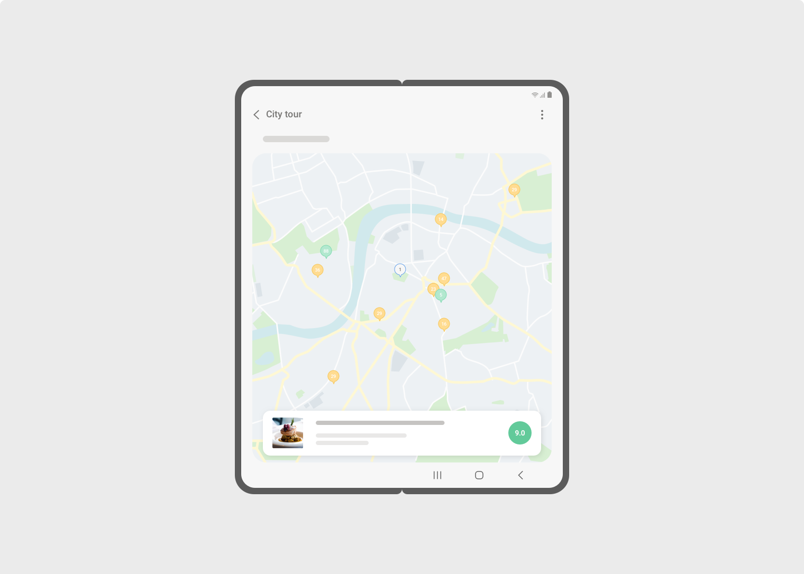
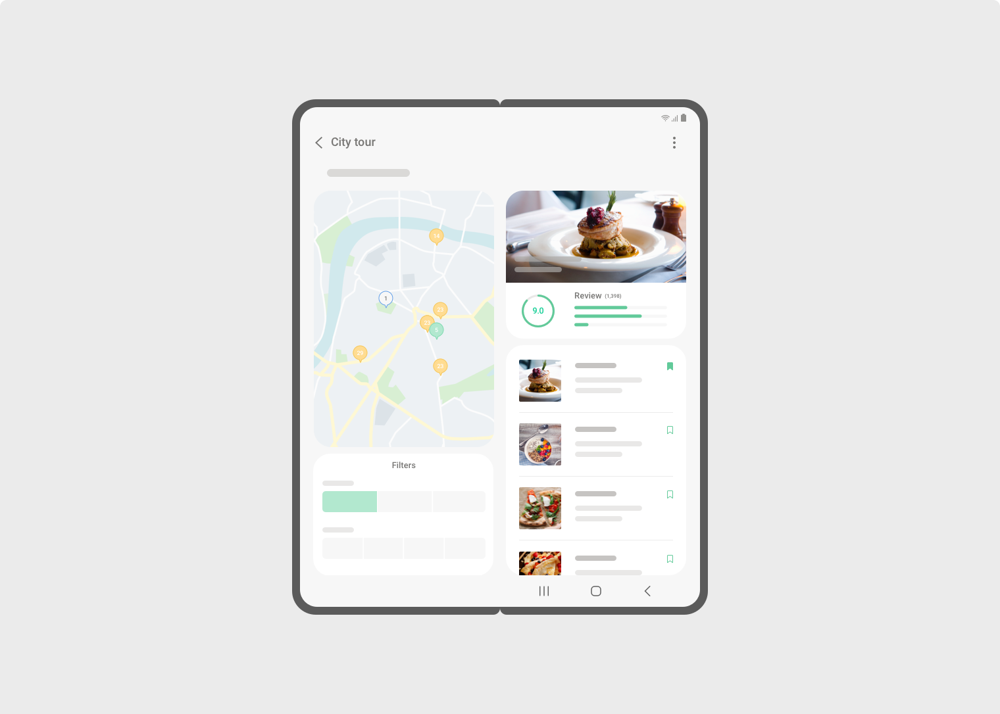

Introduction
- In 2019, Samsung released the Galaxy Fold, our first foldable device with One UI. Since then, we've partnered with companies around the world to optimize user experiences for the Galaxy Z series' Flip and Fold form factors. We've also worked to meet users' growing needs for tablets and other devices with large screens.
- These interface and interaction guidelines are provided with examples to help you deliver enjoyable and productive experiences on foldable and large-screen devices.
Large screen UI
Responsive Layout is essential
- The Galaxy Z Fold series has two screens on one device – the Cover screen is visible when the device is folded, and the Main screen is visible when the device is unfolded. Since users fold and unfold their devices frequently, it’s important to provide an optimized layout for each screen. By dynamically changing the UI to match the screen size, optimized layouts can also be applied to devices with larger screens such as tablets.
- Responsive layout is also essential for app continuity between screens.
- Go to App Continuity
CHECK POINTS !
- 1 Does your app display correctly on screens with various sizes, widths, and aspect ratios?
- 2 Does your app support landscape orientation?
- 3 Does your app display correctly on both the Cover screen and Main screen?
- 4 Does your app fill the entire screen?
- * DPI can be changeable in Settings for the main screen (Screen layout and zoom) between Phone UI (less than SW 600) and Tablet UI (SW 600 or more).
Find out more on
-
Responsive layouts
Android Developers
-
Responsive UI
Material design
Don’t waste the extra space
- Our research shows that foldable device users use apps on both the Main screen and Cover screen, depending on which one is more convenient at the time. However, users are unhappy when an app is simply stretched out to fit the large Main screen when the device is unfolded.

Stretched Phone layout

Large screen optimized layout
Ideal layouts for large screen
- Users feel that stretched-out apps are just wasting the extra space of the large screen, which is supposed to be one of the primary benefits of the device. Here are useful tips for designing an Ideal layout for large screen.
Show more information at once
- On larger screens, a dual-pane layout lets you show the app hierarchy. By flattening navigation, users can access content quickly without a full-screen transition.
Multi-pane UI(Dual-pane): Setting menu example
CHECK POINTS !
Find out more on
-
Sliding pane layout
Android Developers
- Navigation rails and 3-pane layouts may be a better fit for some apps. If possible, make your app support navigation rail, dual-pane, and triple-pane layouts depending on the screen size and orientation.
Multi-pane UI(Navigation rail, Triple-pane): Note & Memo example
CHECK POINTS !
Find out more on
-
Navigation rail
Material Design
Get things done without leaving the screen
- For an input field that requires a small amount of information, use a small pop- over instead of filling the entire screen. Showing on top of the previous screen helps users accomplish their task without forgetting what they were working on.
Pop-over: Clock & Alarm example
CHECK POINTS !
- 1 Use a pop-over for simple actions such as creating and editing.
Do more at the same time
- Your app may have a feature that is useful to remain visible, but doesn’t require frequent interaction. In these cases, use a small floating widget that can appear on top of other apps.
Mini UI: Timer with video viewing example
CHECK POINTS !
- 1 Use floating widgets to let users use multiple features at the same time.
Reduce finger travel distance
- On large screens, pop-ups should appear near the button or other UI element that the user interacted with to cause the pop-up to appear. Keeping the pop-up near the button reduces finger travel distance and saves time.
Proximity pop-ups: Calendar & schedule example
CHECK POINTS !
- 1 Show pop-ups near the last place that the user touched on the screen.
More app examples
Communication apps
- These apps take advantage of dual pane, adjustable split bar and pop over.
Communication apps
Camera & Photo-taking apps
- These apps take full advantage of large screens when taking photos and capturing images.
Camera & Photo-taking apps
Emoji editing
- Responsive layout designed for phones, foldables, and tablets
how to use extra space in landscape view
Communication apps
Content browsing & viewing apps
- Responsive layout designed for phones, foldables, and tablets
List and grid change according to screen size
Adjustable split bar in dual-pane view
Uses pop-overs
Supports Flex mode for video viewing
Communication apps